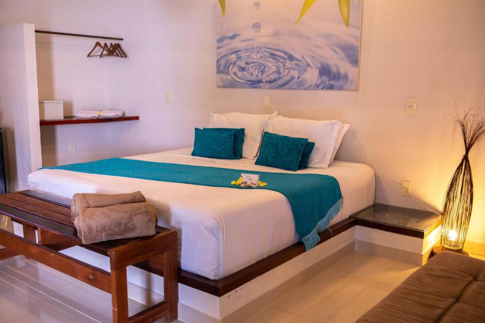

A escolha de quem quer conforto sem abrir mão do bom preço. A suíte fica no térreo, de frente para o jardim, a 50 metros da piscina.
Detalhes
- Área: 22 m2
- Capacidade: 2 pessoas
- Cama: casal queen
- Diária: a partir de R$ 390
- Pet: aceita pequeno porte
Nota dos hóspedes:
Perguntas frequentes
O que está incluído na diária?
Café da manhã regional, Wi-Fi, estacionamento e uso da piscina e do redário.
Dá para colocar uma cama extra?
Não. Para 3 pessoas, recomendamos a Suíte Vista Mar.